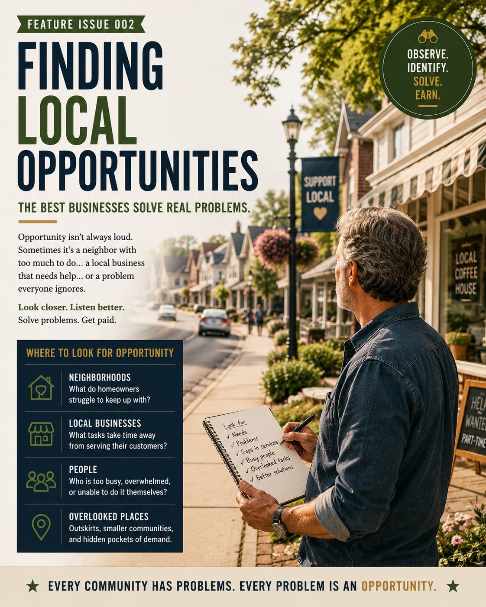
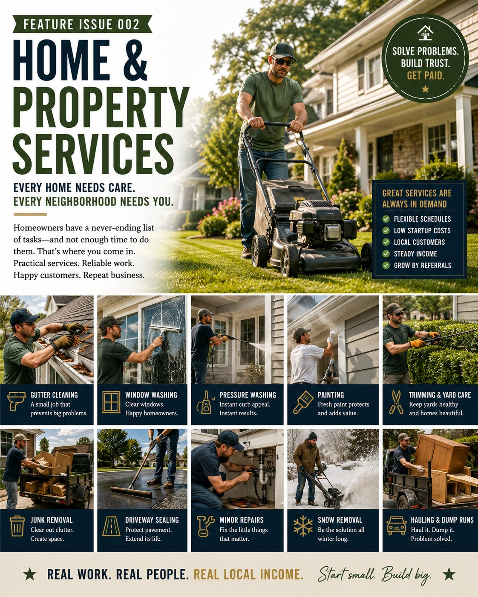
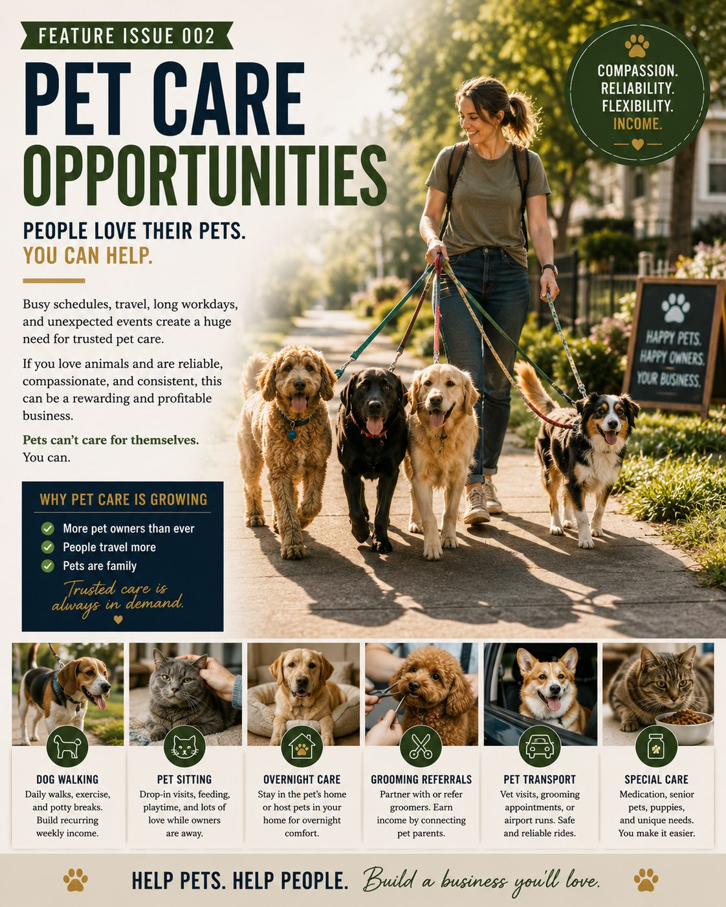
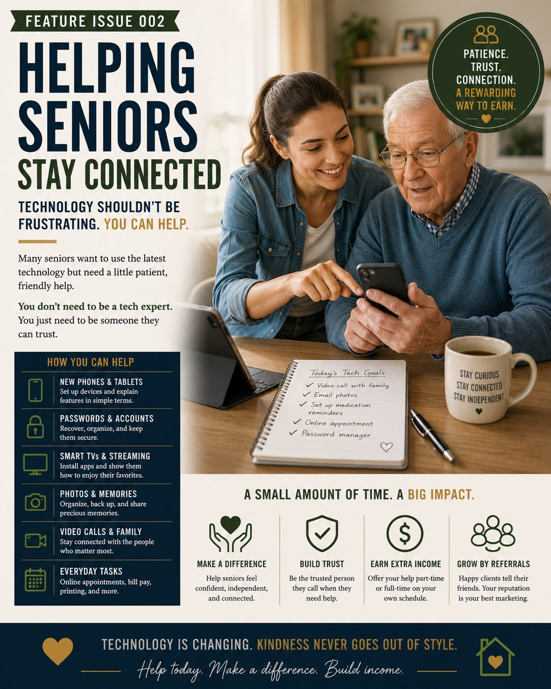
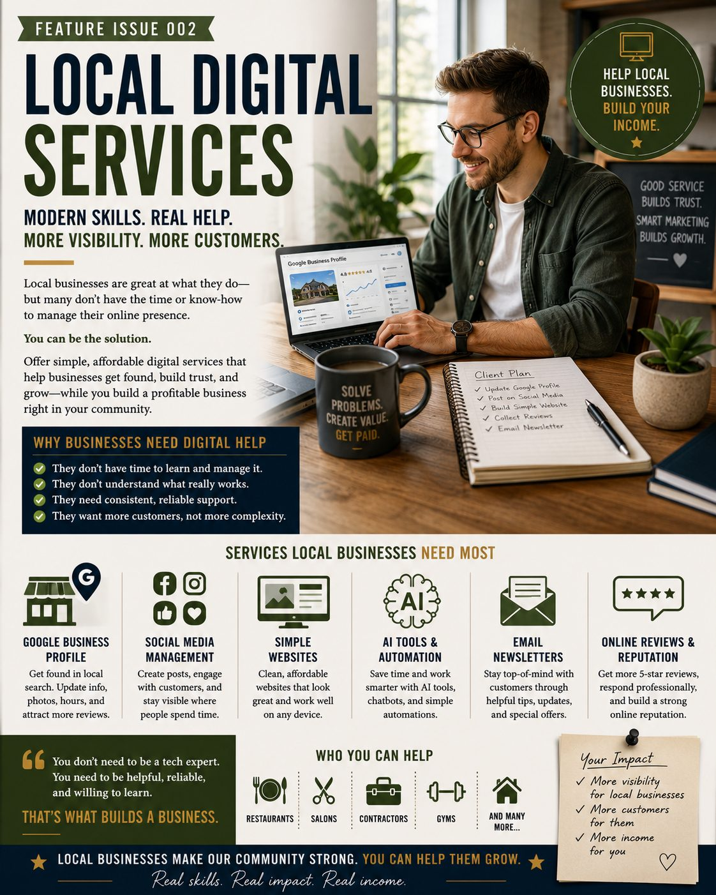
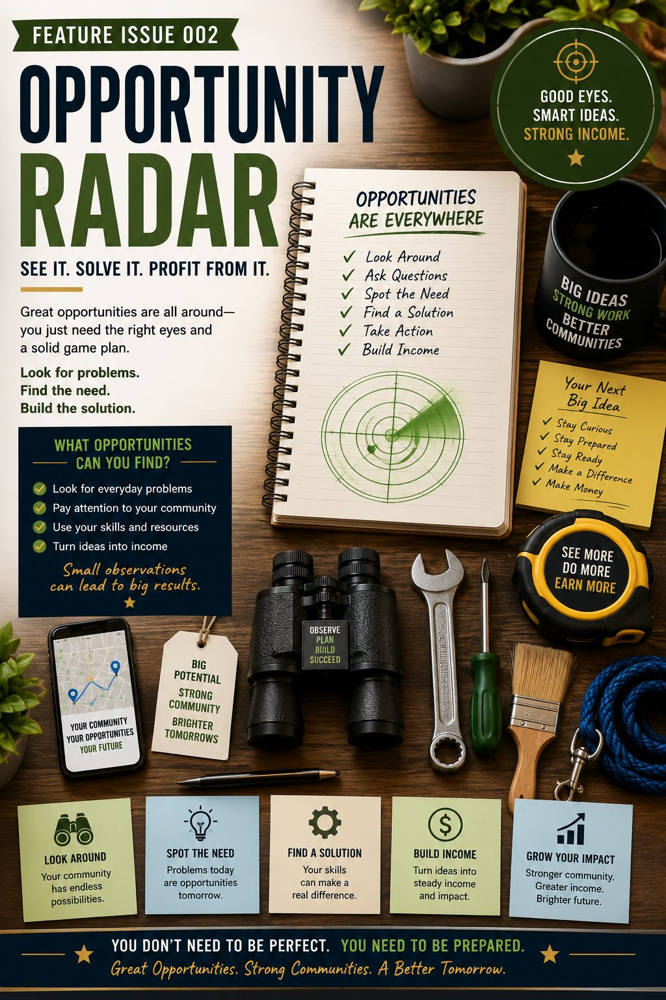

Small-Town Opportunities
Practical local side hustles hiding in small towns, suburbs, growing neighborhoods and the overlooked edges of cities.
Opportunity is not limited by where you live. It begins with noticing what people need and becoming someone they can trust to help.
Inside Feature Issue 002
Find the work hiding in plain sight
From the Editor
Opportunity is closer than you think
People often imagine that opportunity exists somewhere else—in a larger city, on a new platform, inside a fast-growing industry or in the hands of someone with more money and experience.
Yet many worthwhile businesses begin much closer to home.
A homeowner needs the grass cut. An older neighbor needs help learning a new phone. A family needs someone dependable to care for a dog during a medical appointment. A local business has an outdated website and unanswered online reviews.
None of these needs is dramatic. That is exactly why they are easy to overlook.
This issue is about learning to notice ordinary problems that people are already willing to pay to have solved. The setting may be a small town, a suburban street, a commuter community or the outer edge of a busy city. The principle remains the same: wherever people live, work, age, travel, own property and operate businesses, there are unmet needs.
You do not need to chase every opportunity in this issue. Choose one that matches your ability, circumstances and local demand. Start carefully, communicate clearly and let reliability become part of what you sell.
Look carefully. Be useful. Build trust.
— Rich Abbott
The best businesses do not begin with a clever name. They begin with a real problem and a dependable solution.
Feature Story
Finding Local Opportunities: Learn to Notice What Other People Ignore
Local opportunity often appears as inconvenience: work that is delayed, disliked, physically difficult, time-consuming or too small for a larger company to prioritize.

Most communities contain more work than first appears. The challenge is that the work rarely announces itself as a business opportunity.
It appears as an overgrown hedge, a senior struggling with a new tablet, a business owner posting inconsistently online, a family needing pet care or a homeowner postponing several small repairs.
The first step is not purchasing equipment or printing business cards. It is learning to observe.
Look for repeated inconvenience
One person needing help may represent a single job. Several people describing the same frustration may reveal a market.
Listen for phrases such as:
- “I cannot find anyone to do a small job.”
- “The company never called me back.”
- “I do not have time to deal with it.”
- “I no longer feel safe doing that myself.”
- “I bought this device but cannot figure it out.”
- “I wish someone reliable could come regularly.”
Those statements describe frustration, but they also describe demand.
Notice who is underserved
Larger companies tend to prioritize larger projects. That can leave small jobs, older homeowners, rental-property owners and busy families searching for dependable help.
A painter may prefer a full house rather than one soffit. A contractor may not want to install a curtain rod, repair a cabinet hinge or handle a short list of household tasks. A marketing agency may be too expensive for a barber, groomer or independent shop.
The opportunity exists in the gap between what the customer needs and what the established market is willing to provide.
Study the rhythm of your community
Different communities produce different needs. A retirement community may generate demand for technology help, transportation, snow removal and light household work. A growing suburb may need pet care, lawn maintenance, hauling and home services. A tourist area may create work around property checks, cleaning, short-term rentals and seasonal maintenance.
City outskirts often combine suburban homes, small businesses, warehouses, commuters and older properties. That mix can produce more opportunity than a crowded downtown where larger service companies are already competing.
Ask whether the need can repeat
Recurring demand is especially valuable. Grass grows again. Dogs need another walk. Businesses need another month of online content. Older customers may need continued technology support. Gutters, windows and properties require seasonal attention.
A one-time project can provide useful income. A recurring service can become predictable.
Start with the smallest responsible test
Do not purchase expensive equipment merely because an idea sounds promising. Speak with potential customers, review local competition, estimate costs and test a manageable version.
A person considering lawn services might begin with several nearby properties using equipment already available. Someone interested in digital marketing could offer a clearly defined Google Business Profile cleanup to one local business. A prospective pet sitter could begin with daytime visits for people they already know.
A simple local-opportunity test
A small test will not prove the size of an entire market, but it can reveal whether the need is genuine enough to investigate further.
Reliability is often the competitive advantage
Customers may not expect perfection from a new local service. They do expect messages to be answered, appointments to be respected and promises to be kept.
In smaller communities and close neighborhoods, reputation travels quickly. One satisfied customer can introduce you to several others. One careless job can do the opposite.
The simplest form of local marketing is completing useful work well enough that people are comfortable recommending you.
Community Services
Home and Property Services: The To-Do List Never Really Ends
Homes, yards, driveways and outbuildings continually require attention. Many owners have the money to pay for help but not the time, equipment, mobility or desire to complete every task themselves.

Home and property services remain among the most reliable local opportunities because the underlying needs do not disappear when a trend changes.
Grass grows. Paint fades. Gutters collect debris. Shrubs become overgrown. Snow falls. Driveways crack. Windows become dirty. Homeowners accumulate unwanted items that must be hauled away.
The work may not appear glamorous, but it solves visible problems and can often be demonstrated with a clear before-and-after result.
Choose a focused service rather than advertising everything
“We do all home services” can make a new operator appear unfocused. A narrower offer is easier for customers to understand and easier for you to price.
Lawn and edge care
Mowing, trimming, blowing clippings and keeping walkways neat on a recurring schedule.
Seasonal property cleanup
Leaves, fallen branches, storm debris, garden cleanup and preparation for changing weather.
Exterior washing
Windows, patios, walkways, selected siding and other surfaces appropriate for your equipment and training.
Painting and touch-ups
Soffits, fascia, sheds, garages, fences and smaller areas that larger painters may not prioritize.
Hauling and dump runs
Moving unwanted items, yard debris or renovation waste when permitted and properly secured.
Winter services
Snow shoveling, snow blowing, walkway clearing and other seasonal assistance appropriate for local conditions.
Bundle services around the customer’s real problem
Customers often need more than one task completed during the same visit. A spring cleanup might include trimming shrubs, removing branches, cleaning walkways and hauling debris. A fall visit might combine leaves, gutters and seasonal storage.
Bundling can improve value, but each service should still be described clearly. Do not allow “while you are here” requests to expand a job without discussing the additional time and cost.
Recurring schedules reduce the need to keep selling
Lawn care, property checks, snow removal and seasonal maintenance can become recurring services. A predictable group of customers is usually more valuable than constantly searching for one-time work.
Give customers a simple option: one-time service, seasonal package or recurring schedule. Explain exactly what is included in each.
Know when a task requires someone else
Minor visual repairs and maintenance are different from regulated electrical, structural, plumbing, gas, roofing or tree-removal work. A small task can still create serious risk.
Large trees, difficult ladders, unstable roofs, major plumbing, hidden electrical problems and heavy equipment should be referred to qualified professionals when the work exceeds your training, licensing or insurance.
Price the complete job, not only the minutes spent working
Travel, preparation, fuel, disposal, loading, cleanup, equipment wear, payment fees and customer communication all consume resources.
A short job may still require a minimum service charge. A hauling job may require dump fees. A painting job may involve setup and cleanup that takes longer than applying the paint.
A small property-care day
This is a simplified illustration, not an earnings promise. Equipment costs, insurance, labor time, disposal fees, local pricing and job difficulty can materially change the outcome.
Build the business around trust
A homeowner is allowing you onto their property and, in some cases, near their home, garage or belongings. Respect the space, communicate delays, photograph existing damage when appropriate and leave the property clean.
The goal is not merely to finish one task. It is to become someone the customer feels comfortable calling again.
Opportunity Spotlight
The Pet Care Economy: Reliable Help for People Who Cannot Always Be There
People work long hours, travel, attend medical appointments and face unexpected changes in their schedules. Their pets still need exercise, food, companionship and dependable care.

Pet care has become more than an occasional favor between neighbors. For many households, a dependable dog walker, pet sitter or transportation provider is part of the practical support that allows work, travel and everyday life to continue.
The strongest opportunity is not simply loving animals. It is combining appropriate animal-handling ability with punctuality, communication, careful instructions and trust.
Begin with a service you can deliver safely
Pet care includes several different types of work. Each one requires a different level of experience, access and responsibility.
Dog walking
Scheduled neighborhood walks for owners who work, have limited mobility or need dependable midday support.
Pet sitting
In-home visits for feeding, water, litter care, playtime and basic companionship while the owner is away.
Overnight care
Staying in the owner’s home or providing approved boarding when your property, insurance and local rules permit it.
Pet transportation
Helping owners with veterinary appointments, grooming visits or other local pet-related travel.
Puppy or senior-pet visits
Shorter, more frequent visits for animals that need extra attention, bathroom breaks or careful routines.
Yard cleanup
A recurring waste-removal service for homeowners who value a cleaner and more usable outdoor space.
Trust begins before the first visit
A pet owner is giving you access to an animal, and often to the owner’s home. That requires more than a friendly introduction.
Use a written intake process. Record feeding instructions, emergency contacts, veterinary information, medications, behavior concerns, escape risks, allergies, preferred walking routes and household access procedures.
Clarify what you will and will not do. For example, administering medication, transporting an animal, handling aggressive behavior or caring for exotic pets may require additional training or insurance.
Meet the pet before accepting the work
A meet-and-greet gives you an opportunity to observe the animal, discuss routines and determine whether the arrangement feels safe and appropriate.
Watch how the dog responds to a leash, strangers, other animals, vehicles and nearby distractions. Ask whether the animal has ever bitten, escaped, guarded food or reacted strongly during walks.
Declining a situation beyond your experience is responsible business judgment, not lost opportunity.
Recurring schedules can create dependable income
A customer who needs a dog walked three times every week may be more valuable than several one-time requests. Recurring visits reduce the time spent finding new customers and create a predictable route.
Grouping nearby clients can also improve efficiency. A compact neighborhood route may allow several appointments without extensive driving between them.
Communication reassures the customer
A short message after each visit can provide meaningful peace of mind. Confirm that the pet was fed or walked, note anything unusual and include a photograph when the owner has approved it.
Avoid overloading customers with unnecessary messages, but do not leave them wondering whether the visit happened.
A recurring dog-walking example
This simplified example represents one recurring customer. Scheduling, travel distance, insurance, platform fees, local pricing and the time required for each visit will affect the actual result.
Grooming can create referral opportunities
Professional grooming may require specialized training, equipment, licensing and appropriate facilities. A pet-care provider does not need to become a groomer to serve the customer well.
You may build relationships with trusted local groomers, trainers, veterinarians and pet-supply businesses. Referrals can strengthen the local pet-care network and make your service more helpful.
Build for the animal’s welfare, not convenience alone
Never accept more animals than you can supervise properly. Use secure equipment, follow heat and weather precautions, carry water when needed and avoid unsafe group combinations.
The pet’s safety must remain more important than fitting another appointment into the schedule.
Community Spotlight
Helping Seniors With Technology: Patience Can Be a Valuable Service
New phones, tablets, computers, printers and smart televisions can create unnecessary frustration when people receive equipment without the patient, personal guidance needed to use it confidently.

Technology assistance for seniors is not necessarily computer repair. In many cases, it is patient instruction delivered in plain language.
A device may be working correctly while the owner struggles to find settings, organize contacts, connect to Wi-Fi, recover an account, print a document or make a video call.
Family members may be willing to help but live far away, have limited time or explain the process too quickly. A trusted local person who can sit down and work through one problem at a time may provide meaningful value.
Focus on ordinary tasks people want to complete
Customers are rarely interested in technical terminology. They want to know how to accomplish something useful.
New phone setup
Contacts, accessibility settings, Wi-Fi, voicemail, trusted apps and basic security configuration.
Video calling
Helping customers connect with children, grandchildren, friends and medical providers.
Photo organization
Transferring, backing up, locating and sharing important family photographs.
Computer basics
Email, web browsing, printing, file organization and routine updates.
Smart television setup
Connecting streaming services, adjusting settings and simplifying remote-control use.
Online appointments
Showing customers how to access portals and schedules without taking control of private medical decisions.
Teach the process instead of performing it silently
The customer gains confidence when they understand what happened and can repeat the steps later.
Move slowly, ask the customer to perform each step and write down simple instructions using the same words displayed on the device. Avoid changing multiple settings without explaining why.
A printed one-page guide can be more useful than a long technical manual.
Protect passwords and private information
Technology help can involve highly sensitive information. Customers may reveal passwords, banking details, medical portals, personal messages and private photographs.
Whenever possible, have the customer enter passwords themselves. Do not keep copies unless a clear, secure and authorized system has been established.
Never transfer money, make financial decisions, access accounts unnecessarily or represent yourself as the customer.
Scam awareness can be part of the lesson
Many older adults receive fraudulent messages, fake technical-support calls, suspicious payment requests and links designed to steal login information.
You can explain common warning signs without claiming to provide professional cybersecurity services.
- Unexpected requests for gift cards or cryptocurrency
- Messages demanding immediate action
- Callers requesting remote access to a device
- Unfamiliar password-reset links
- Requests for verification codes
- Claims that a family member needs emergency money
Encourage the customer to pause and contact a trusted family member, bank or official organization through a known telephone number.
Offer lessons in manageable sessions
Trying to cover an entire phone or computer in one visit may leave the customer more overwhelmed than before.
A better approach is to solve one or two priorities during each session. The next appointment can build on what the customer already understands.
Recurring lessons can cover photos, email, video calling, online safety, streaming television and other everyday needs.
A technology-help visit
Pricing will vary according to travel, session length, complexity, local demand and whether additional equipment or subscriptions are required.
Trust is more important than showing off expertise
Customers should never feel embarrassed for asking a basic question. A calm, respectful explanation can be more valuable than advanced technical knowledge delivered impatiently.
The service succeeds when the person feels more capable after you leave.
Modern Opportunity
Local Digital Services: Small Businesses Need Practical Online Help
Many independent businesses know they should improve their online presence but do not have the time, staff or confidence to manage every profile, website update, customer review and content platform.

The local barber, pet groomer, contractor, café, florist, repair shop and independent retailer may all depend on the internet while having little interest in becoming digital-marketing experts.
Their problem is often not a lack of ideas. It is a lack of time and consistent execution.
A practical digital-service provider can help with clearly defined tasks without pretending to be a full-service agency.
Begin with visible problems
Look at the customer experience from the perspective of someone searching for the business for the first time.
- Are the opening hours accurate?
- Is the telephone number easy to find?
- Does the website work on a phone?
- Are recent customer reviews being answered?
- Are photographs outdated or poor quality?
- Has the business posted anything recently?
- Can customers understand the services and pricing?
- Is there an obvious way to request an appointment?
Each of those gaps can become a clearly explained service.
Google Business Profile support
A local business profile may influence whether a customer calls, requests directions or chooses a competitor.
Services could include reviewing contact details, business categories, hours, service areas, photographs, descriptions, frequently asked questions and review-response procedures.
The business owner should retain ownership and primary access. Do not create unnecessary dependence by controlling essential accounts.
Simple website updates
Many businesses do not need an elaborate new website. They may need outdated information corrected, broken links fixed, photographs replaced, services reorganized or a clear contact form added.
A maintenance package can be easier to deliver than a complete redesign. Define how many updates are included, how quickly requests are handled and who supplies the written material and images.
Social content with a local purpose
Local businesses rarely need to imitate national entertainment accounts. They need content that helps nearby customers understand what they offer.
Service demonstrations
Short videos or photographs showing the work, process or finished result.
Customer questions
Posts answering the questions customers repeatedly ask before making an appointment.
Seasonal reminders
Timely information about maintenance, booking deadlines, holiday hours or changing services.
Local credibility
Staff introductions, community involvement, testimonials and behind-the-scenes stories.
Short-form video and UGC-style content
TikTok, Instagram Reels and YouTube Shorts have increased demand for informal, useful video. The person creating the content does not necessarily need a large personal following.
A local business may need someone to record a product demonstration, explain a service, show a before-and-after result or create several vertical videos from one afternoon of filming.
Written permission is important when customers, private property, employees or branded materials appear in the content.
Email newsletters
Many businesses collect customer email addresses but communicate only when they have an immediate promotion.
A simple monthly newsletter can include useful advice, seasonal reminders, appointment availability, community news and one clear offer.
Email lists must be handled responsibly. Use proper consent, unsubscribe tools and privacy practices rather than uploading unapproved contact lists.
Review monitoring and customer follow-up
Reviews can influence local purchasing decisions, but many business owners respond only when a complaint becomes urgent.
A support service might notify the owner of new reviews, draft courteous responses for approval and create a simple process for inviting satisfied customers to leave honest feedback.
Never purchase reviews, invent customer experiences or pressure customers to write only positive comments.
AI can support the work without replacing judgment
AI tools may help organize ideas, draft outlines, summarize notes, propose content variations or create first versions of routine material.
The service provider remains responsible for accuracy, tone, originality, confidentiality and the final result.
Do not upload confidential customer information, private business records or sensitive data into unapproved systems.
A local visibility package
This is a simplified example rather than an earnings promise. Research, revisions, account access, travel, filming, software, client acquisition and communication time all affect profitability.
Sell a result the owner can understand
Business owners may not care which software you use. They care whether customers can find accurate information, see recent work and contact the business easily.
“I help local service businesses improve the information customers see before calling” is clearer than listing ten platforms and technical tools.
Begin with one business category and one defined package. Build a repeatable process before adding more services.
Opportunity Radar
Overlooked Local Needs Worth Watching
Not every idea deserves a full business plan today. Some deserve a place on your radar while you watch for demand, learn the work and decide whether the opportunity fits your community.

Opportunity becomes easier to recognize when you stop asking, “What business should I start?” and begin asking, “What problems do people repeatedly struggle to solve?”
The following ideas may be small, seasonal or highly local. That does not make them unimportant. A focused service serving a limited area can still create meaningful income.
Home watch services
Check vacant homes, seasonal properties or snowbird residences for visible problems, storm damage, leaks or access concerns.
Mailbox and house-number updates
Replace worn numbers, install approved mailboxes and improve address visibility for deliveries and emergency services.
Wheelie-bin cleaning
A recurring exterior cleaning service for household waste and recycling bins where local water and disposal rules permit it.
Holiday setup and takedown
Assist with decorations, storage retrieval and seasonal setup without accepting unsafe roof or electrical work.
Mobile sharpening
Knives, garden tools and mower blades may create local demand for someone with the proper equipment and skill.
Bicycle tune-ups
Tires, brakes, chains and basic adjustments can help families keep usable bicycles out of storage.
Airbnb or rental turnover support
Cleaning checks, supply restocking, photographs and simple issue reporting for local property owners.
Local delivery and pickup
Furniture pickup, hardware-store runs or local delivery for people without suitable transportation.
Watch for the same request appearing repeatedly
One conversation can inspire an idea. Repeated requests provide stronger evidence.
Keep a simple opportunity notebook. Record what people ask for, who needs it, what existing providers charge and why customers appear dissatisfied with current options.
Do not rush to turn every observation into a purchase. Some ideas disappear after closer research. Others become more compelling as several people describe the same problem.
Evaluate the full opportunity
A service may sound attractive until transportation, insurance, licensing, cleanup, storage or customer-acquisition costs are considered.
Before committing, answer these questions:
- How often does the need occur?
- Who already provides the service?
- Why are customers still dissatisfied?
- What equipment and training are required?
- What could go wrong?
- Can the work be tested on a small scale?
- Can customers become recurring clients?
Build around usefulness rather than novelty
A new platform may receive more attention, but a dependable local service can survive because the underlying problem continues to exist.
The most durable opportunities often combine an evergreen need with a modern improvement: easier booking, digital payments, better communication, online reviews or more professional presentation.
The Wealth Code Principle
Money follows value
Income is often the result of becoming useful to someone else. Reliability, judgment and the ability to solve ordinary problems can become more valuable than chasing the most exciting opportunity.
The more useful you become to your community, the more opportunities you begin to recognize—and the more reasons people have to call you again.
Editor’s Picks
Build a versatile starter toolkit
Buy tools in response to real work rather than purchasing an entire workshop before the first customer appears. These selections support many of the practical services discussed throughout this issue.
Tape Measure
Useful for estimates, furniture assembly, shelves, fixtures, small repairs and confirming whether equipment will fit through a space.
View Tape MeasureCordless Drill and Driver Kit
A versatile starting tool for assembly, fastening, installation and appropriate light repair work.
View Drill KitBasic Hand Tool Set
A coordinated set can cover common household tasks while keeping frequently used tools organized in one place.
View Hand Tool SetWork Gloves
Useful for yard cleanup, hauling, rough materials, tools and dirty equipment when the glove type matches the task.
View Work GlovesSafety Glasses
Appropriate eye protection should be part of the routine whenever debris, dust, cutting, drilling or powered equipment is involved.
View Safety GlassesSix-Foot Step Ladder
A properly rated ladder can support appropriate indoor and low-height work when inspected and used according to the manufacturer’s instructions.
View Step LadderExtension Cords
Outdoor-rated and appropriately sized cords can support tools and lighting when used within their stated capacity.
View Extension CordsTool Bag
A well-organized tool bag reduces forgotten equipment and makes arriving at a customer’s property feel more professional.
View Tool BagLED Work Light
Portable lighting can improve visibility in garages, basements, cabinets, utility areas and dim workspaces.
View Work LightUtility Knife
Useful for packaging, selected materials and routine shop tasks when handled carefully and stored securely.
View Utility KnifeAffiliate disclosure: The product links above may earn a commission at no additional cost to you. Always select tools appropriate for your work, experience and safety requirements.
Recommended Reading
Continue building the person behind the business
Practical skills may help you earn the first customer. Purpose, judgment and disciplined thinking help determine what you build from there.
Your Million Dollar Why
A meaningful reason can help turn a temporary burst of motivation into the persistence required to serve customers and build something worthwhile.
Explore the BookMillionaire Mindset
A broader look at the decisions, habits and ways of thinking that support long-term financial progress beyond the first side hustle.
Explore the BookThe Knowledge Trap
Learning matters, but opportunity is created when knowledge moves beyond planning and becomes responsible action.
Explore the BookContinue Your Wealth Journey
Begin The Wealth Code Course
If this issue has encouraged you to look at your community differently, continue with practical lessons about opportunity, financial habits, purpose and long-term progress.
The course is designed to help you move beyond finding one job and begin thinking about what responsible, lasting wealth-building may require.
Explore the Course- Recognize opportunity without relying on hype
- Connect income goals to a meaningful purpose
- Evaluate risks, costs and tradeoffs
- Build habits that support consistent action
- Turn useful work into stronger financial choices
Editorial, Safety and Affiliate Disclosure
This feature is provided for general educational and informational purposes. It does not provide legal, tax, financial, licensing, insurance, animal-care, technology-security, electrical, construction, medical or professional advice.
Requirements vary by location and type of work. Readers should verify applicable laws, permits, business registration, insurance, zoning, platform rules, safety procedures and professional requirements before offering a service.
Dollar amounts used in examples are simplified illustrations rather than earnings promises. Actual demand, revenue, expenses, taxes, travel, equipment costs, customer acquisition, time requirements and profit will vary.
Some links in this issue are affiliate links. RichAbbott.com may earn a commission when readers purchase through those links, at no additional cost to the buyer. Product recommendations are included because they relate to the work discussed. Some featured books are written by Rich Abbott.